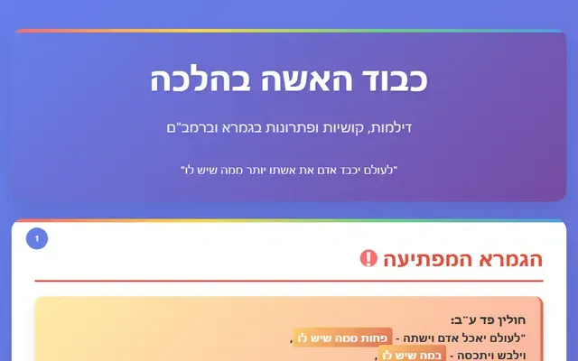
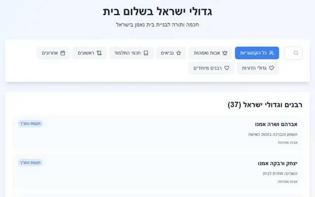
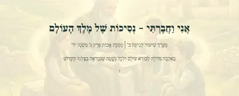
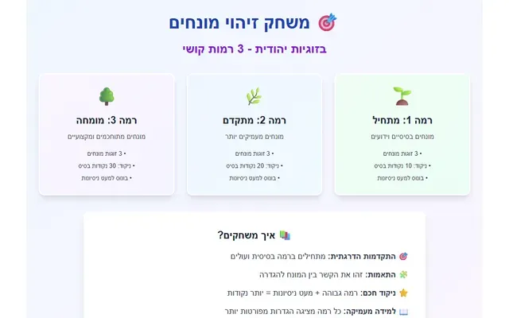

כבוד האישה וזוגיות
מדריכים ומחקרים על כבוד, הערכה ואהבה בחיי הנישואין
29 פריטים
כבוד האישה ביהדות (16)
כבוד האישה – יסודות הכבוד וההערכה (מצגת)
איך בונים אצל האישה תחושת ערך – ההבדל בין שבח להערכה עמוקה.

כבוד האשה – דילמות הלכתיות ופרשניות (מצגת)
״יכבד את אשתו יותר ממה שיש לו״ – קושיות ותשובות בגמרא וברמב״ם.
הכבוד האמיתי לאשת חיל – היהדות מול העולם (מצגת)
השוואה בין גישת היהדות לגישת העולם המערבי לערך האישה.
אמנות התקשורת המכבדת (מצגת)
כלים מעשיים לדיבור מכבד בזוגיות – מהאשמה לשיתוף.

שלום בית בעיני גדולי ישראל
מה לימדו האבות והאמהות, חכמי התלמוד וגדולי הדורות על שלום בית, לפי תקופות ונושאים.
שלום בית – המדריך המלא
משימות יומיות, סיפורים, דברי חכמה ומשפטים על כבוד האישה ושלום בית.
המדריך המעשי להקשבה
שלבים פשוטים להקשבה אמיתית לאישה – הכנה, כוונה והקשבה פעילה.

אני וחברתי – נסיכות של מלך העולם (מצגת)

כבוד האישה ביהדות
💝 "לאהוב פירושו לתת" - שיעור חיים מהרבי מלובביץ' קרא עוד 🎯 "האדם מחפש משמעות" - התפיסה היהודית על תכלית החיים …

כבוד האשה ביהדות
'''כבוד האישה''' ביהדות הוא חיוב של בעל לשמור על כבוד אשתו, ברגש של כבוד והערכה כלפיה ובפעולות מעשיות. חז"ל …
למה הבעל שמכבד את אשתו זוכה לעושר? הסוד המפתיע של כבוד אמיתי
שלום לכם, מאזינים ומאזינות יקרים, לפודקאסט "אם בישראל"! בפרק הזה נצלול אל נבכי הנפש והזוגיות, ונדון בנושא עמו…
אהבה לעומת כבוד
שלום לכם, מאזינים ומאזינות יקרים, לפודקאסט "אם בישראל"! בפרק הזה נצלול אל נבכי הנפש והזוגיות, ונדון בנושא עמו…

הכבוד בשביל הנותן או בשביל המקבל?
כבוד, כובד וכוונה: ניתוח תכלית מצוות הכבוד במסורת היהודית – בין תיקון הנותן לצורכי המקבל מבוא: שאלת הכבוד – …

מנין שכבוד זה בלב?
🎙️ שלום הבית – המפתח לחיים טובים! שלום: שלום לכם, מאזינים יקרים! 🙋♂️🎧 ברוכים הבאים לעוד פרק של "שלום הבית –…
ההבדל המהותי בצורך הכבוד בין איש לאישה
ההבדל המהותי בצורך הכבוד בין איש לאישה מדריך תורני לשלום בית על פי חכמת חכמינו פתיחה יחסי הבית הם אבן יסוד בע…
💝 "לאהוב פירושו לתת" - שיעור חיים מהרבי מלובביץ'
🕊️ המעשה המדהים שלימד דור שלם: 👑 הרבי והדולרים - מה באמת קרה שם: במשך עשרות שנים , הרבי מלובביץ' נהג לעמוד ש…
מחקרים ומדריכים לזוגיות (13)
שלום בית – אפליקציה עם משימות יומיות ומשוב
משימות יומיות קטנות לשלום בית – הודיה, מחמאה, הקשבה ועזרה – עם מעקב ומשוב.
מבחן: סודות הבית המאושר
עשר שאלות על כבוד האישה ושלום בית לפי חכמינו.
מבחן מתקדם בשלום בית – 20 שאלות
עשרים שאלות לבחינת ידע מעמיק בשלום בית, עם שעון וניקוד.
יום בנעליים שלה
התרומה הבלתי נראית של האישה בבית – בניהול הבית, בחינוך הילדים ובתמיכה רגשית.
מפת האהבה
שאלות להכרה עמוקה של העולם הפנימי של האישה, לפי מחקרי ד״ר גוטמן.

משחק זיהוי מונחים בזוגיות יהודית
שכינה, בת מלך, עזר כנגדו ועוד – משחק התאמה בשלוש רמות.
ספריית ואהבת – שיעורים והרצאות על זוגיות
בונה המחמאות
הפוך מחשבה טובה למחמאה מעצימה ובלתי נשכחת למה זה עובד? המדע מאחורי מחמאה מעצימה מחמאה רגילה היא נחמדה, אבל מחמ…
מדריך מקיף לכיבוד האישה בחיי הנישואים
קרא כאן את המחקר - עם תמונות כיבוד האישה הוא ערך מרכזי בחיי הנישואים, המשלב פעולות מעשיות יומיומיות עם עבודה …

כבוד האישה - מדריך מקיף
30 מקורות מקורות אלה מציגים הרהורים אישיים ויומיומיים של גבר בנוגע לשיפור יחסיו עם אשתו וטיפוח שלום בית. הט…

מחקר על צורת המחמאות הטובות
פענוח הנוסחה האוניברסלית למחמאה אפקטיבית: מדריך רב-תחומי לבעל המבקש להעצים את אשתו מבוא: מעבר למילה הטובה – …

מפת דרכים לכבוד והערכה בזוגיות: תובנות ממחקר גלובלי
מבוא: מפת הדרכים לכבוד והערכה בזוגיות – תובנות ממחקר גלובלי החיפוש אחר זוגיות מספקת, המעניקה תחושת ערך, שמחה…

כיצד לחזק הערכה זוגית אמיתית לאורך זמן
ניתן לקרוא את המחקר כאן כיצד לחזק הערכה זוגית אמיתית לאורך זמן חיזוק הערכה והכרת תודה בזוגיות נמצא כיום בבסי…